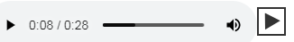

Для листания картинок:
На устройствах с клавиатурой можно пользоваться стрелочками клавиатуры: вправо или влево;
На устройствах с сенсорным экраном для листания вперёд/назад достаточно провести пальцем по экрану вправо или влево;
Рассказик можно послушать, а можно прочитать:
Кнопочка справа вверху ✎ открывает окошко с текстом.
Прослушивание записанного рассказа.
Внизу страницы расположена панель аудио-проигрывателя:

Справа от проигрывателя кнопка позволяющая включить автопрокрутку картинок с чтением рассказика вслух.
Во многих рассказах, как, впрочем, и в жизни, мы таки часто услышим матершинку, а сие нежелательно для детей до 18 лет... Поэтому мы таки рекомендуем не врубать громкость так, чтобы оно орало на весь район!
Так-как тырнетный сайт считается за средство массовой информации, то велено указывать на какой возраст оно, в смысле, СМИ, рассчитано.
Во многих рассказах, как, впрочем, и в жизни, мы таки часто услышим матершинку, а сие нежелательно для детей до 18 лет... Поэтому мы таки рекомендуем не врубать громкость так, чтобы оно орало на весь район!
Дык вот из-за наличия матершинки наш сайтик рассчитан на возраст 18+
Политика конфиденциальности
На сайте "Одесские баранки" не требуется от наших гостей какой-либо регистрации пользователя.
Кнопки "нравится" и "поделиться" доступны для зарегистрированных пользователей социальной сети "Facebook".
Мы придерживаемся политики конфиденциальности такой же, как на Facebook.
При копировании ссылка на сайт обязательна.